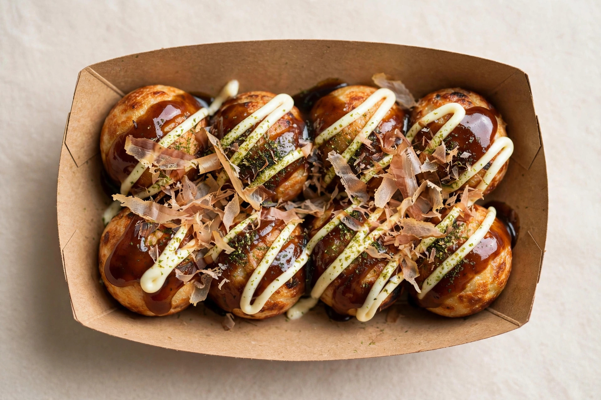

たこ焼き
Takoyaki · tah-koh-yah-kee
What is takoyaki?
Ball-shaped batter cakes with a piece of octopus （たこ tako) inside — crispy outside, molten and creamy inside. Osaka's most famous street food, topped with sweet-savory sauce, mayo, dancing bonito flakes, and seaweed powder.
What's inside
🐙 Octopus
Raw / cooked
🔥 Cooked
Spicy?
No
Typical price
¥500–800 (8 pc)
How to eat them (without injury)
- They are lava. Fresh takoyaki are molten inside. Wait 1–2 minutes, or bite a small hole first to let steam out.
- Use the toothpick/skewer provided, not chopsticks — they're designed for spearing.
- The bonito flakes （かつお節） will wave in the heat — that's normal, they're just that thin.
Variations you'll see
- 明石焼き Akashiyaki — the original: softer, egg-rich balls dipped in dashi broth instead of sauce.
- ねぎマヨ Negi-mayo — topped with green onion and extra mayo.
- チーズ Cheese — with melted cheese inside.
Where to find the best
Osaka — specifically the Dotonbori area. But good takoyaki stands exist in every Japanese city; look for a queue and a cook flipping balls with steel picks at high speed.
Common questions
Does it taste fishy?
Not really. The octopus piece is small and mild; what you mostly taste is the savory batter, sauce, and mayo.
Is there a non-octopus version?
Some stands offer cheese, mochi, or shrimp fillings — look for チーズ (cheese) on the sign.